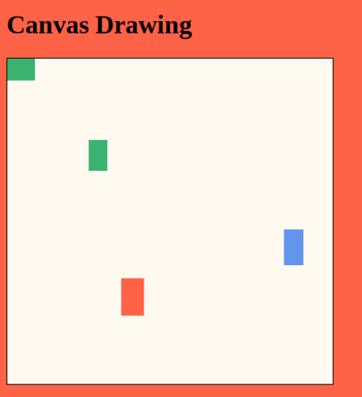

Create a Painting Space Using a Canvas
In this project, you're going to create a canvas you can paint on in your webpage.
1. Add a canvas element to your page, and make JavaScript variables for it and its 2d context.

2. Make an array of some of your favorite colors.
3. Make a function that chooses one of these colors at random and returns it.
4. Make a function that draws a rectangle in one of these colors on the canvas, and call it a few times in your code to test it. The rectangle will need a pair of coordinates and a width and height.

5. Make the rectangles have random width and height.
6. Add an event listener that will call your function each time the mouse moves. Make the rectangle be drawn at the mouse's current position.